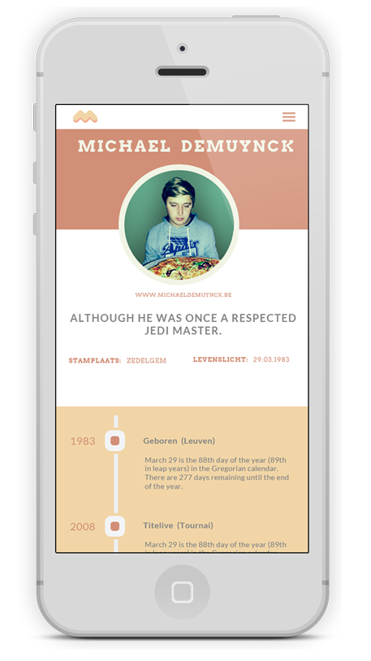

Michael Demuynck
gepassioneerd door HTML, passie en details.
gepassioneerd door HTML, passie en details.

De fazant is hier waarschijnlijk ingevoerd door de Romeinen. Vanaf de koloniale tijd zijn andere soorten fazanten aangevoerd die zich met de bestaande populatie hebben gekruist. De fazant wordt daarom ook wel beschouwd als exoot. De fazant wordt over de hele wereld sterk bejaagd en behoort tot de populairste soorten kleinwild ter wereld. Vòòr 1993 werden ze in Nederland door jagers uitgezet om voldoende jachtbuit te kunnen garanderen. Sinds 1993 mag dat niet meer, waardoor de populatie geleidelijk vermindert.
Medicapp is een mobiele webapp die de gebruiker via geolocatie de dichtstbijzijnde dokters, apothekers en ziekenhuizen voorschotelt. Deze applicatie is volledig gebouwd met jQuery Mobile en steunt voor alle gegevens op XML.
De fazant is hier waarschijnlijk ingevoerd door de Romeinen. Vanaf de koloniale tijd zijn andere soorten fazanten aangevoerd die zich met de bestaande populatie hebben gekruist. De fazant wordt daarom ook wel beschouwd als exoot. De fazant wordt over de hele wereld sterk bejaagd en behoort tot de populairste soorten kleinwild ter wereld. Vòòr 1993 werden ze in Nederland door jagers uitgezet om voldoende jachtbuit te kunnen garanderen. Sinds 1993 mag dat niet meer, waardoor de populatie geleidelijk vermindert.
Michael's TT Page op Geocities, nostalgie uit 1996 en de eerste ontluikende liefde
voor het web, html en de de perfectie van isometrie.
Eerste kennismaking met RGB en CMYK gebeurde met Photoshop 7 en Illustrator 9.
Michael's TT Page op Geocities, nostalgie uit 1996 en de eerste ontluikende liefde
voor het web, html en de de perfectie van isometrie.
Eerste kennismaking met RGB en CMYK gebeurde met Photoshop 7 en Illustrator 9.
Gemaakt in Zedelgem
© Michael Demuynck, 2013